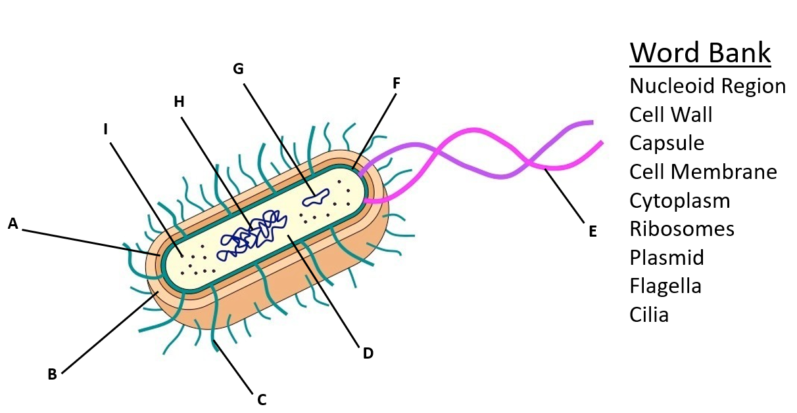
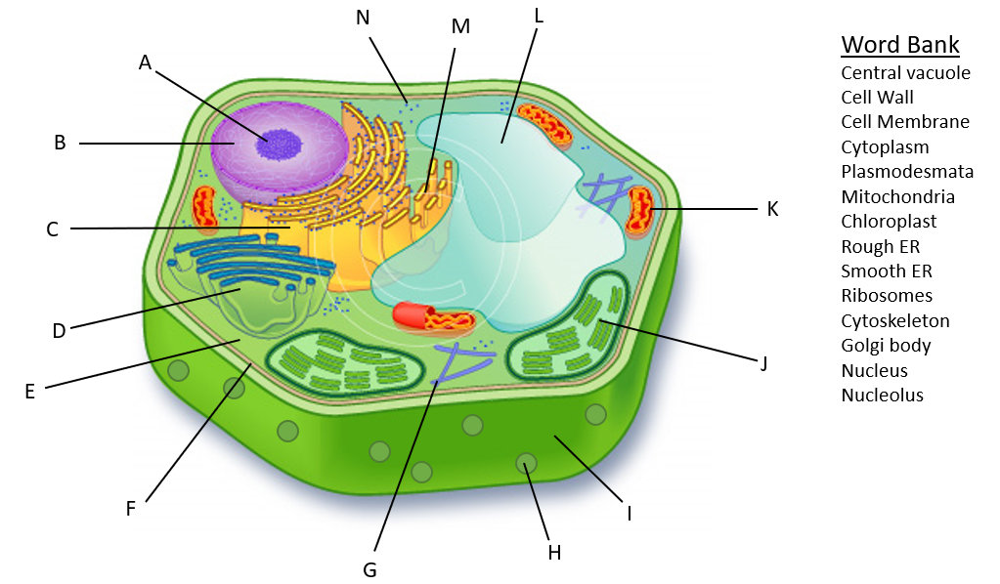
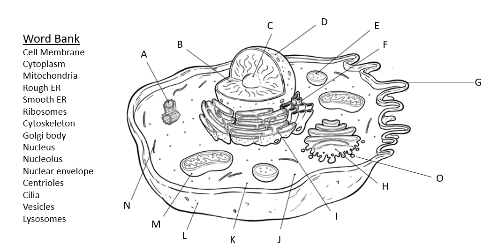

Biology I Honors: Unit 2 Cells & Cell Transport Summative Master Study Guide & Answer Keys
Course: Biology I Honors • South Forsyth High School • Dr. Sarah Irwin (Room #371)
Assessment Dates: Wednesday / Thursday, September 23–24, 2026
Exam Format: Multiple Choice AND Short Answer Sections
State Standards Alignment: GSE SB1.a (Cell structure & function) & SB1.d (Cell membrane & transport mechanisms)
🎯 Executive Test Overview & Critical Focus Areas
Dr. Irwin explicitly noted on Canvas: "Keys will not be posted for these resources."
This master guide provides the complete, authoritative, and exhaustive worked solutions for both official review packets:
1. Cells Study Guide.docx.pdf
2. Cell Membrane and Transport Study Guide.docx.pdf
High-Yield Short Answer Expectations:
- The Endomembrane Protein Synthesis Relay: Tracing a secretory protein from DNA transcription in the nucleus through export at the plasma membrane.
- Organelle System Collaboration & "Cease to Collaborate" Failure Analysis: Explaining how two organelles rely on one another, and constructing Claim-Evidence-Reasoning (CER) arguments predicting cellular consequences if one organelle malfunctions or is inhibited by a toxin.
- Tonicity & Osmotic Pressure Scenarios: Calculating concentration gradients and explaining physical changes in plant (turgor vs. plasmolysis) and animal cells (lysis vs. crenation).
📋 PART 1: Complete Answer Key — Cell Study Guide
Question 1: Master Organelle Function & Location Matrix (22 Organelles)
| Organelle / Structure | Location (Plant / Animal / Bacteria) | Structure & Membrane Count | Primary Biological Function |
|---|---|---|---|
| a. Nucleus | Plant & Animal (Eukaryotes only) | Double membrane (nuclear envelope) with nuclear pores | Houses genetic material ($\text{DNA}$); controls cell activities, growth, and protein synthesis transcription. |
| b. Chloroplasts | Plant (and photosynthetic algae) | Double membrane; internal stacks of thylakoids (grana) suspended in stroma | Site of photosynthesis: converts light energy, $\text{CO}_2$, and $\text{H}_2\text{O}$ into chemical energy (glucose) and $\text{O}_2$. |
| c. Mitochondria | Plant & Animal (All Eukaryotes) | Double membrane; folded inner membrane (cristae) and fluid matrix | Site of aerobic cellular respiration: oxidizes pyruvate/glucose to produce $\text{ATP}$ chemical energy. |
| d. Rough ER (RER) | Plant & Animal | Single membrane; network of folded cisternae studded with ribosomes | Synthesizes, folds, and modifies secretory proteins and membrane proteins; packages them into transport vesicles. |
| d. Smooth ER (SER) | Plant & Animal | Single membrane; tubular network free of ribosomes | Synthesizes lipids (phospholipids, steroids), metabolizes carbohydrates, detoxifies drugs/toxins (liver), stores $\text{Ca}^{2+}$ ions. |
| e. Cytoplasm / Cytosol | All cells (Plant, Animal, Bacteria) | Semi-fluid gel matrix (water, salts, proteins) | Suspends organelles; medium for metabolic reactions (e.g., glycolysis, initial biochemical steps). |
| f. Ribosomes | All cells (Plant, Animal, Bacteria) | Non-membranous; composed of $\text{rRNA}$ and proteins (80S in eukaryotes, 70S in prokaryotes) | Site of translation (protein synthesis); translates $\text{mRNA}$ codons into polypeptide chains. |
| g. Cell Membrane | All cells (Plant, Animal, Bacteria) | Phospholipid bilayer embedded with proteins, cholesterol, and carbohydrates | Selectively permeable barrier regulating the entry and exit of substances; maintains cellular homeostasis. |
| h. Golgi Apparatus | Plant & Animal | Single membrane; flattened stacks of unattached cisternae (cis and trans faces) | Receives, sorts, modifies, tags (glycosylation), and packages proteins and lipids into vesicles for secretion or intracellular delivery. |
| i. Lysosomes | Animal (Rare/controversial in plants) | Single membrane; acidic interior containing hydrolytic digestive enzymes | Digests worn-out organelles (autophagy), food particles, and engulfed pathogens (phagocytosis); programed cell death (apoptosis). |
| j. Vacuoles | Plant (Large Central Vacuole) & Animal (Small, multiple vacuoles) | Single membrane (tonoplast in plants) | Storage of water, nutrients, pigments, and wastes; in plants, creates turgor pressure against the cell wall for structural rigidity. |
| k. Cytoskeleton | Plant & Animal (Prokaryotes have protein homologues) | Non-membranous network of protein fibers | Maintains cell shape, anchors organelles, enables cell motility, and facilitates intracellular transport. |
| l. Centrioles | Animal (Absent in higher plants, except some lower flagellated forms) | Non-membranous cylinder of 9 microtubule triplets ($9+0$ pattern) | Organizes the mitotic spindle during animal cell division; forms the base of cilia and flagella (basal body). |
| m. Nucleolus | Plant & Animal | Dense, non-membranous region inside the nucleus | Site of ribosomal RNA ($\text{rRNA}$) transcription and ribosome subunit assembly. |
| n. Nuclear Membrane | Plant & Animal | Double lipid bilayer (inner and outer nuclear membranes) | Separates the genetic material inside the nucleus from the cytoplasm; outer membrane is continuous with the Rough ER. |
| o. Nuclear Pores | Plant & Animal | Protein complexes spanning the nuclear envelope | Regulate macromolecular traffic: allows $\text{mRNA}$ and ribosomal subunits out, and proteins/enzymes (e.g., $\text{DNA}$ polymerase) in. |
| p. Cell Wall | Plant (Cellulose) & Bacteria (Peptidoglycan); also Fungi (Chitin) | Rigid extracellular layer outside plasma membrane | Provides structural support, mechanical strength, prevents osmotic lysis, and determines cell morphology. |
| q. Plasmodesmata | Plant only | Microscopic plasma membrane-lined cytoplasmic channels through cell walls | Connects neighboring plant cells for intercellular transport of water, ions, signaling molecules, and nutrients. |
| r. Gap Junctions | Animal only | Transcellular channels formed by protein rings called connexons | Allows direct chemical and electrical communication between neighboring animal cells (e.g., intercalated discs in cardiac muscle). |
| s. Microfilaments | Plant & Animal | Thin, helical actin protein filaments (~7 nm diameter) | Cell motility (amoeboid movement), muscle contraction (with myosin), cytoplasmic streaming, and cleavage furrow formation in cytokinesis. |
| t. Microtubules | Plant & Animal | Hollow cylinders of $\alpha$- and $\beta$-tubulin dimers (~25 nm diameter) | Structural highway for motor proteins (kinesin/dynein), mitotic spindle fibers during mitosis, structural core of cilia and flagella ($9+2$ array). |
| u. Tight Junctions | Animal only | Continuous watertight seals formed by claudins and occludins | Prevents fluid leakage between epithelial cells (e.g., lining of the gut and urinary bladder). |
| v. Nucleoid Region | Bacteria (Prokaryotes only) | Non-membrane-bound cytoplasmic region | Contains the single, circular double-stranded bacterial chromosome (genomic $\text{DNA}$). |
Question 2: The 5 Historical Cell Scientists
| Scientist | Contribution & Discovery | Mnemonic / Anchor |
|---|---|---|
| 1. Robert Hooke (1665) | Examined thin slices of cork under an early compound microscope; coined the word "cell" because the empty cellulose chambers resembled the small rooms (cellulae) of monks in a monastery. | Hooke discovered Cork and named Cells. |
| 2. Anton van Leeuwenhoek (1674) | Improved microscope lens grinding; first to observe living microorganisms in pond water and dental scrapings; named them "Animalcules" (bacteria and protozoa). | Leeuwenhoek saw Living Little Animalcules. |
| 3. Matthias Schleiden (1838) | German botanist who concluded that all plants and plant tissues are composed of cells. | Schleiden = Plants (Botanist). |
| 4. Theodor Schwann (1839) | German zoologist who concluded that all animals and animal tissues are composed of cells. | Schwann sounds like Swan (Animal/Zoologist). |
| 5. Rudolf Virchow (1855) | Proposed that all cells arise from pre-existing cells ("Omnis cellula e cellula"), disproving spontaneous generation. | Virchow = Verification that cells come from other cells. |
Question 3: The 3 Tenets of the Cell Theory
- All living organisms are composed of one or more cells (unicellular or multicellular).
- The cell is the most basic structural and functional unit of life.
- All cells arise from pre-existing cells through cell division.
Question 4: Plant vs. Animal Cells (Venn Diagram Summary)
PLANT CELLS ONLY SHARED STRUCTURES ANIMAL CELLS ONLY
┌───────────────────────────────┐ ┌───────────────────────────────┐ ┌───────────────────────────────┐
│ • Rigid Cellulose Cell Wall │ │ • Plasma / Cell Membrane │ │ • Centrioles / Centrosomes │
│ • Chloroplasts (Photosynth.) │ │ • Cytoplasm & Cytosol │ │ • Lysosomes (prominent) │
│ • Large Central Vacuole │ ─── │ • Ribosomes (80S) │ ─── │ • Small, temporary vacuoles │
│ (Turgor Pressure) │ │ • Nucleus & Nucleolus │ │ • Gap Junctions │
│ • Plasmodesmata │ │ • Mitochondria & ER (R/S) │ │ • Tight Junctions & Desmosomes│
│ • Square / Rectangular shape │ │ • Golgi Apparatus & Vesicles │ │ • Irregular / Round shape │
└───────────────────────────────┘ └───────────────────────────────┘ └───────────────────────────────┘
Question 5: Prokaryotes vs. Eukaryotes
| Feature | Prokaryotes | Eukaryotes |
|---|---|---|
| Evolutionary Age | Ancient (~3.5 billion years ago) | More modern (~1.5–1.8 billion years ago) |
| Nucleus | No (genetic material is in a nucleoid) | Yes (enclosed in a double nuclear membrane) |
| Membrane-Bound Organelles | None (no mitochondria, chloroplasts, ER, Golgi) | Present (compartmentalized organelles) |
| DNA Structure | Single, circular chromosome; naked (no histones); circular plasmids | Multiple linear chromosomes bound to histone proteins |
| Ribosome Size | 70S (smaller) | 80S (cytosol/ER); 70S in mitochondria/chloroplasts |
| Cell Size | Small (0.1 – 5.0 $\mu\text{m}$) | Large (10 – 100 $\mu\text{m}$) |
| Cell Division | Binary fission | Mitosis and Meiosis |
| Domains / Examples | Domain Bacteria (E. coli, Streptococcus) & Domain Archaea (methanogens, halophiles) | Domain Eukarya: Animals, Plants, Fungi (Yeast, Mushrooms), and Protists (Amoeba, Paramecium) |
Question 6 & 7: The Endomembrane System & Protein Synthesis Pathway
Definition:
The Endomembrane System is an interconnected network of internal membranes within eukaryotic cells that work together to synthesize, modify, package, transport, and degrade proteins and lipids.
Participating Organelles:
- Nucleus / Nuclear Envelope
- Rough Endoplasmic Reticulum (RER)
- Smooth Endoplasmic Reticulum (SER)
- Transport Vesicles
- Golgi Apparatus
- Lysosomes
- Vacuoles
- Plasma Membrane
Step-by-Step Secretory Protein Synthesis Relay:
- Transcription in Nucleus: In the nucleus, a gene's $\text{DNA}$ sequence is transcribed into messenger RNA ($\text{mRNA}$).
- Nuclear Export: $\text{mRNA}$ exits the nucleus via nuclear pores into the cytoplasm.
- Translation Initiation: A ribosome binds to the $\text{mRNA}$. If the protein has a signal peptide, the ribosome docks onto the membrane of the Rough ER.
- Folding & Modification in RER: The growing polypeptide chain enters the lumen of the Rough ER, where it folds into its 3D conformation and undergoes initial glycosylation.
- Vesicle Budding: The protein is enclosed in a transport vesicle that pinches off the RER.
- Golgi Processing: The vesicle travels along microtubules and fuses with the cis-face of the Golgi apparatus. The protein moves through cisternae, receiving carbohydrate modifications and molecular address tags.
- Packaging at Trans-Face: At the trans-face, the protein is sorted into:
* A secretory vesicle (destined for exocytosis at the cell membrane).
* Or a lysosome (if it contains hydrolytic enzymes). - Exocytosis: The secretory vesicle fuses with the plasma membrane, releasing the protein (e.g., insulin) outside the cell.
Question 8: Prokaryotes vs. Viruses (Why Viruses are Non-Living)
| Characteristic | Bacteria (Prokaryotes) | Viruses (Acellular Particles) |
|---|---|---|
| Cellular Organization | Complete unicellular organism with membrane, cytoplasm, and ribosomes | Acellular (no membrane, no cytoplasm, no organelles, no ribosomes) |
| Structure | Phospholipid bilayer, peptidoglycan wall, nucleoid $\text{DNA}$ | Protein coat (capsid) enclosing genetic material ($\text{DNA}$ or $\text{RNA}$) |
| Metabolism | Autonomous metabolic pathways; generates own $\text{ATP}$ | No independent metabolism; cannot generate or utilize $\text{ATP}$ |
| Reproduction | Autonomous reproduction via binary fission | Obligate intracellular parasite: requires host cell machinery to replicate |
| Response to Antibiotics | Susceptible to antibiotics (target cell wall or 70S ribosomes) | Immune to antibiotics (antibiotics do not target viruses) |
Why Viruses are Not Considered Living:
- Do not consist of cells (violates the foundational tenet of Cell Theory).
- Cannot perform metabolism or energy processing independently.
- Cannot maintain internal homeostasis.
- Cannot reproduce independently without hijacking host enzymes and ribosomes.
Question 9: Cell Diagram Labeling Keys (Bacteria, Plant & Animal)
1. Bacteria (Prokaryotic) Cell Diagram (Matching Word Bank)

| Letter | Organelle / Structure | Word Bank Term | Biological Description & Role |
|---|---|---|---|
| A | Cell Wall | Cell Wall |
Rigid middle protective envelope layer made of peptidoglycan. |
| B | Capsule | Capsule |
Outermost sticky protective polysaccharide sheath. |
| C | Cilia (Pili) | Cilia |
Hair-like surface protein filaments for adhesion and conjugation. |
| D | Ribosomes | Ribosomes |
70S ribonucleoprotein particles synthesizing proteins in cytosol. |
| E | Flagella | Flagella |
Long whip-like helical appendage for bacterial locomotion. |
| F | Cell Membrane | Cell Membrane |
Innermost phospholipid bilayer regulating transport. |
| G | Plasmid | Plasmid |
Small circular extrachromosomal DNA ring carrying auxiliary genes. |
| H | Nucleoid Region | Nucleoid Region |
Region containing the circular double-stranded genomic DNA chromosome. |
| I | Cytoplasm | Cytoplasm |
Internal aqueous ground substance suspending cellular contents. |
2. Plant (Eukaryotic) Cell Diagram (Matching Word Bank)

| Letter | Organelle / Structure | Word Bank Term | Biological Description & Role |
|---|---|---|---|
| A | Nucleolus | Nucleolus |
Dense intra-nuclear factory for rRNA synthesis and ribosome assembly. |
| B | Nucleus | Nucleus |
Double-membrane genetic control center housing chromatin. |
| C | Rough ER | Rough ER |
Ribosome-studded folded membrane cisternae for secretory protein folding. |
| D | Golgi body | Golgi body |
Stacks of flattened membrane sacs for sorting, modifying, and shipping proteins. |
| E | Cytoplasm | Cytoplasm |
Cytosol gel suspending organelles and enzymes. |
| F | Cell Membrane | Cell Membrane |
Selectively permeable lipid bilayer inside the cell wall. |
| G | Cytoskeleton | Cytoskeleton |
Dynamic protein microfilaments and microtubules for internal support. |
| H | Plasmodesmata | Plasmodesmata |
Microscopic membrane-lined tunnels traversing cell walls to connect adjacent cells. |
| I | Cell Wall | Cell Wall |
Outer rigid cellulose wall resisting osmotic pressure and providing shape. |
| J | Chloroplast | Chloroplast |
Double-membrane photosynthesis organelle with thylakoid grana. |
| K | Mitochondria | Mitochondria |
Aerobic cellular respiration organelle generating ATP. |
| L | Central vacuole | Central vacuole |
Huge fluid reservoir exerting turgor pressure against the cell wall. |
| M | Smooth ER | Smooth ER |
Tubular membrane network synthesizing lipids and detoxifying chemicals. |
| N | Ribosomes | Ribosomes |
Translation units floating free in cytoplasm or docking on RER. |
3. Animal (Eukaryotic) Cell Diagram (Matching Word Bank)

| Letter | Organelle / Structure | Word Bank Term | Biological Description & Role |
|---|---|---|---|
| A | Centrioles | Centrioles |
Paired barrel-shaped microtubule cylinders organizing the mitotic spindle. |
| B | Nucleus | Nucleus |
Spherical organelle containing linear chromosomes and chromatin. |
| C | Nucleolus | Nucleolus |
Dark staining core assembling ribosomal subunits. |
| D | Nuclear envelope | Nuclear envelope |
Perforated double membrane regulating macromolecular transit. |
| E | Lysosomes | Lysosomes |
Acidic hydrolytic digestion vesicle for autophagy and waste breakdown. |
| F | Smooth ER | Smooth ER |
Lipid and steroid synthesis network; calcium storage. |
| G | Cilia (or Microvilli) | Cilia |
Plasma membrane surface folds and extensions. |
| H | Golgi body | Golgi body |
Sorting hub attaching carbohydrate address tags to outgoing cargo. |
| I | Vesicles | Vesicles |
Membrane transport bubbles ferrying cargo along microtubules. |
| J | Ribosomes | Ribosomes |
Free cytosolic 80S ribosomes synthesizing domestic cellular proteins. |
| K | Cytoplasm | Cytoplasm |
Intracellular fluid matrix. |
| L | Cell Membrane | Cell Membrane |
Outer boundary regulating entry and exit. |
| M | Mitochondria | Mitochondria |
Oval powerhouse with folded inner cristae producing cellular ATP. |
| N | Cytoskeleton | Cytoskeleton |
Actin microfilaments and tubulin microtubules maintaining geometry. |
| O | Rough ER | Rough ER |
Extensive folded membrane network coated with ribosomes. |
Question 10: Organelle System Collaboration & "Cease to Collaborate" Failure Analysis (Short Answer CER Preparation)
This is the exact table from Page 3 of Dr. Irwin's Study Guide:
| Organelles / Structures | Primary Functions | How They Collaborate in the Cell | Consequence If They Cease to Collaborate (Cell Failure / Pathology) |
|---|---|---|---|
| 1. Mitochondria & Chloroplast | • Chloroplast: Uses sunlight to convert $\text{CO}2 + \text{H}_2\text{O} \to \text{C}_6\text{H}{12}\text{O}6 + \text{O}_2$. • Mitochondria: Breaks down $\text{C}_6\text{H}{12}\text{O}_6 + \text{O}_2 \to \text{CO}_2 + \text{H}_2\text{O} + \text{ATP}$. |
Direct metabolic coupling in plant cells. Chloroplasts synthesize glucose and $\text{O}_2$, which fuel mitochondrial aerobic respiration. Mitochondria release $\text{CO}_2$ and $\text{H}_2\text{O}$, which are the raw reactants for photosynthesis. | If chloroplasts fail or uncouple from mitochondria, the plant cell exhausts its stored glucose, depriving mitochondria of substrate. Cellular $\text{ATP}$ levels plummet, cellular transport stops, and the cell starves and dies. |
| 2. Cell Wall & Central Vacuole | • Cell Wall: Rigid cellulose matrix providing counter-pressure. • Central Vacuole: Stores water and generates outward hydrostatic pressure. |
Together they create turgor pressure. The central vacuole fills with water, swelling outward. The rigid cell wall pushes back, preventing lysis and keeping the plant upright and rigid. | If the central vacuole loses water (in hypertonic conditions), outward pressure drops. The plasma membrane pulls away from the cell wall (plasmolysis). The plant wilts and undergoes mechanical collapse. |
| 3. Ribosome & Rough ER (RER) | • Ribosome: Translates $\text{mRNA}$ into amino acid chains. • RER: Membrane lumen that folds and packages proteins. |
Ribosomes dock onto translocon pores on the RER surface, injecting synthesized polypeptide chains directly into the RER lumen for chaperone-assisted folding and disulfide bond formation. | Polypeptides synthesized by detached ribosomes fail to enter the ER lumen. Secretory and membrane proteins remain unfolded or aggregate in the cytosol, halting export and triggering the unfolded protein response ($\text{UPR}$) leading to apoptosis. |
| 4. Rough ER & Golgi Apparatus | • RER: Packages folded proteins into transport vesicles. • Golgi: Modifies, sorts, and ships proteins. |
RER buds off COPII-coated transport vesicles containing folded proteins. These vesicles travel along microtubules and fuse with the cis-Golgi cisternae to deliver cargo for enzymatic processing. | Vesicle trafficking halts. Proteins accumulate inside the RER, causing toxic ER dilation. The Golgi starves of substrate, secretion ceases, and lysosomes cannot receive hydrolytic enzymes, creating cellular waste accumulation. |
| 5. Golgi Vesicles & Vacuoles / Lysosomes | • Golgi Vesicles: Pinch off trans-Golgi carrying acid hydrolases. • Vacuoles / Lysosomes: Acidic digestive and storage organelles. |
Golgi adds mannose-6-phosphate tags to hydrolytic enzymes, packaging them into clathrin-coated vesicles that bud off and fuse with endosomes/vacuoles to mature into functional, active lysosomes. | Lysosomes never receive digestive enzymes. Undigested macromolecules (lipids, glycogen) accumulate inside defective lysosomes, causing lethal cellular swelling (analogous to human Tay-Sachs disease or inclusion-cell disease). |
📋 PART 2: Complete Answer Key — Cell Membrane and Transport Study Guide
1. Phospholipids & Bilayer Architecture
- What is a Phospholipid? An amphipathic lipid molecule consisting of:
1. Phosphate group + Glycerol backbone: Polar, hydrophilic head (attracted to water).
2. Two fatty acid chains: Non-polar, hydrophobic tails (repelled by water; one saturated, one unsaturated with a cis-double bond kink). - The 3 Chemical Components: Glycerol molecule, phosphate group (often with a charged nitrogenous base like choline), and two hydrocarbon fatty acid tails.
- Cell Membrane Structure (Fluid Mosaic Model):
- Phospholipid Bilayer: Hydrophilic heads face the aqueous extracellular fluid and cytosol; hydrophobic tails point inward, shielded from water.
- Integral / Transmembrane Proteins: Span the entire hydrophobic core; act as transport channels, carriers, receptors, or enzymes.
- Peripheral Proteins: Loosely bound to the outer or inner membrane surface; function in signaling and cytoskeletal attachment.
- Cholesterol: Temperature buffer interspersed among fatty acid tails. Prevents membrane from freezing at low temperatures and stabilizes membrane from becoming overly fluid at high temperatures.
- Glycoproteins & Glycolipids: Carbohydrate chains attached to proteins or lipids on the extracellular surface; function in cell-to-cell recognition, adhesion, and immune identification.
2. Selective Permeability
- Definition: A property of cellular membranes that allows certain substances to pass through while preventing or regulating the passage of others.
- Mechanism:
- Can Pass Freely (Simple Diffusion): Small, non-polar, hydrophobic molecules (e.g., $\text{O}_2$, $\text{CO}_2$, $\text{N}_2$, steroids) and very tiny uncharged polar molecules (slowly, e.g., $\text{H}_2\text{O}$).
- Cannot Pass Freely (Requires Transport Proteins):
- Ions and Charged Particles ($\text{Na}^+, \text{K}^+, \text{Cl}^-, \text{Ca}^{2+}$): Cannot penetrate the non-polar hydrocarbon tail core.
- Large Polar Molecules (Glucose, sucrose, amino acids): Too bulky and polar to traverse the hydrophobic barrier.
3. Passive Transport (3 Types)
Passive transport requires zero cellular metabolic energy ($\text{0 ATP}$) and moves solutes down their concentration gradient (from HIGH concentration to LOW concentration).
- Simple Diffusion: Net movement of small, non-polar molecules directly across the phospholipid bilayer from high to low concentration until dynamic equilibrium is reached.
- Facilitated Diffusion: Passive movement of polar or charged molecules down their gradient through transmembrane proteins.
* Channel Proteins: Hydrophilic tunnels (e.g., aquaporins for water, ion channels) that allow rapid flow without changing shape.
* Carrier Proteins: Undergo subtle conformational (shape) changes to bind and shuttle specific solutes (e.g., GLUT glucose transporters) across the membrane. - Osmosis: The passive net diffusion of free water molecules across a selectively permeable membrane from an area of lower solute concentration (high free water) to an area of higher solute concentration (low free water).
4. Osmotic Solutions & Cell Responses
HYPOTONIC SOLUTION ISOTONIC SOLUTION HYPERTONIC SOLUTION
Solute Concentration: [Solute]outside < [Solute]inside [Solute]outside = [Solute]inside [Solute]outside > [Solute]inside
Free Water: Higher outside Equal both sides Lower outside
Net Water Movement: INTO the cell NO NET MOVEMENT (Dynamic Eq.) OUT OF the cell
ANIMAL CELL: Swells and BURSTS (LYSIS) ☹ NORMAL / HEALTHY ☺ SHRIVELS / CREATES (CRENATION) ☹
PLANT CELL: TURGID / NORMAL / RIGID ☺ FLACCID / LIMP :/ PLASMOLYZED (Membrane shrinks) ☹
Why Plants and Animals Differ:
- Animal cells lack a cell wall; they require an isotonic environment to prevent osmotic lysis.
- Plant cells have a rigid cellulose cell wall; they require a hypotonic environment so water drives high turgor pressure inside the central vacuole, pushing against the cell wall to keep stems and leaves erect.
5. Active Transport (3 Types)
Active transport requires cellular metabolic energy ($\text{ATP}$) and moves substances against their concentration gradient (from LOW concentration to HIGH concentration).
- Molecular Pumps (Primary Active Transport): Transmembrane carrier proteins hydrolyze $\text{ATP}$ directly to pump ions against their electrochemical gradient.
* Flagship Example: The Sodium-Potassium ATPase Pump ($\text{Na}^+/\text{K}^+$ Pump): Hydrolyzes $1\ \text{ATP}$ to pump $3\ \text{Na}^+$ ions OUT of the cell and $2\ \text{K}^+$ ions IN, establishing resting membrane potential in neurons and muscle cells. - Endocytosis: Bulk transport moving large macromolecules, liquids, or whole cells INTO the cell via membrane invagination and vesicle formation.
* Phagocytosis ("Cellular Eating"): Membrane engulfs large, solid particles or whole cells (e.g., white blood cell engulfing bacteria) into a phagosome, which fuses with a lysosome.
* Pinocytosis ("Cellular Drinking"): Membrane invaginates to take in droplets of extracellular fluid containing dissolved solutes non-specifically.
* Receptor-Mediated Endocytosis: Membrane receptors bind specific target ligands (e.g., $\text{LDL}$ cholesterol); coated pits (clathrin) invaginate to bring ligands in with high specificity. - Exocytosis: Bulk transport moving substances OUT OF the cell. Secretory vesicles transport waste or synthesized proteins from the Golgi, dock and fuse with the plasma membrane, and release their contents into the extracellular space.
6. Situation Classification Table (Page 3 of Study Guide)
| Scenario / Situation | Type of Transport | Form of Transport | Direction / Tonicity |
|---|---|---|---|
| Oxygen moving from your lungs to your bloodstream | Passive | Simple Diffusion | High concentration in alveoli $\to$ Low concentration in deoxygenated blood capillaries. |
| Transport of hormones from one body tissue to another | Active (Bulk) | Exocytosis (release) & Receptor-Mediated Endocytosis (uptake) | Vesicle fusion releasing hormones OUT into bloodstream; target cells uptake via receptors. |
| Freshwater fish is released into a marine environment | Passive | Osmosis | Environment is HYPERTONIC relative to fish body fluids; water rushes OUT of fish cells, causing severe dehydration and crenation. |
| A marine shark wanders into fresh waters in search of prey | Passive | Osmosis | Environment is HYPOTONIC relative to shark body fluids; water rushes INTO shark cells, causing cellular swelling and osmotic stress. |
| Import of food particles to be used to generate ATP | Active (Bulk) | Phagocytosis / Endocytosis | Large nutrient particles moved INTO the cell via vesicles. |
🗓️ 2-Day Hour-by-Hour Master Study Plan (Countdown to Summative)
Day 1: Tuesday, September 22 (Organelles & Endomembrane Mastery)
- 4:00 PM – 5:00 PM: Review the 22-Organelle Master Matrix. Memorize plant-specific vs. animal-specific structures.
- 5:00 PM – 6:00 PM: Draw the Endomembrane Protein Synthesis Relay on paper from memory (Nucleus $\to$ RER $\to$ Golgi $\to$ Vesicle $\to$ Exocytosis).
- 6:00 PM – 7:00 PM: Dinner break & mental rest.
- 7:00 PM – 8:30 PM: Drill the 5 "Cease to Collaborate" Scenarios from Part 1, Question 10. Write out CER responses for organelle failure.
- 8:30 PM – 9:30 PM: Complete Unit 2 practice test in the interactive portal (test-doc-02).
Day 2: Wednesday, September 23 (Membrane, Transport & CER Polish)
- 4:00 PM – 5:15 PM: Review Fluid Mosaic Model & Selective Permeability. Practice drawing a phospholipid with polar head and nonpolar tails.
- 5:15 PM – 6:30 PM: Master the Tonicity Matrix: Hypotonic, Isotonic, Hypertonic. Drill plant (turgid vs. plasmolyzed) vs. animal (lysed vs. crenated).
- 6:30 PM – 7:30 PM: Dinner break.
- 7:30 PM – 8:45 PM: Review Active Transport: Sodium-Potassium pump ($3\ \text{Na}^+\ \text{out} / 2\ \text{K}^+\ \text{in}$), Phagocytosis, Pinocytosis, Receptor-Mediated Endocytosis, and Exocytosis.
- 8:45 PM – 9:30 PM: Take the 55-Question Master Exam (test-unit-2-part-1-comprehensive-mastery.html). Review any missed questions.
- 9:30 PM: Rest and sleep early for peak cognitive performance on exam day!